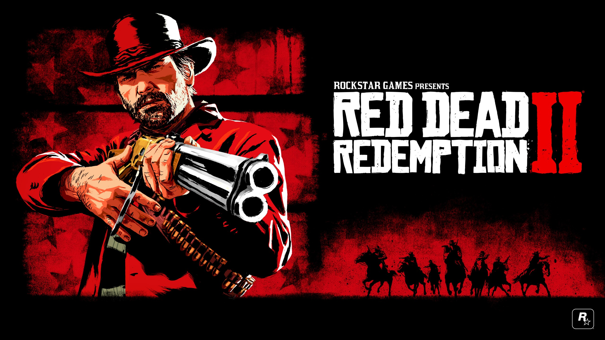
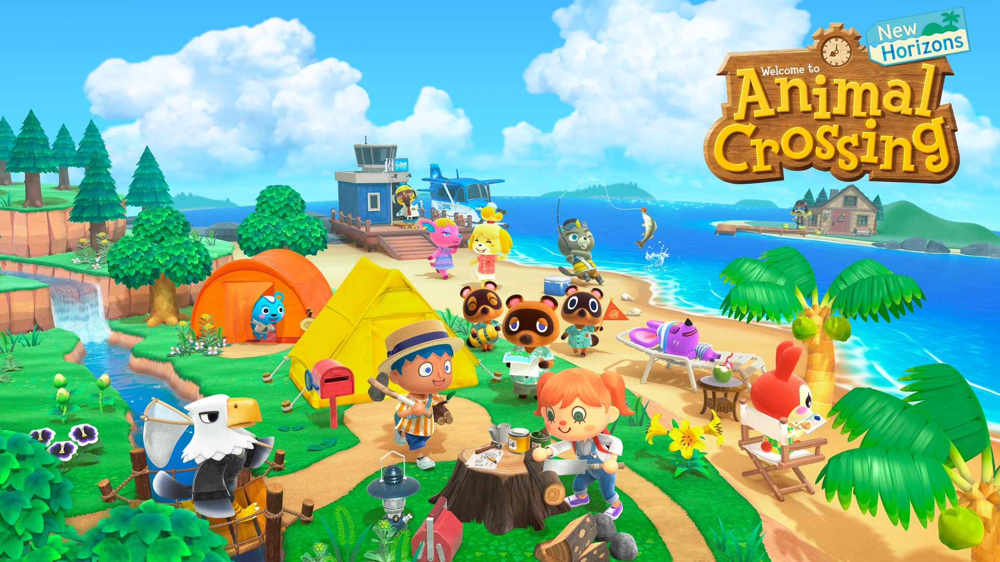
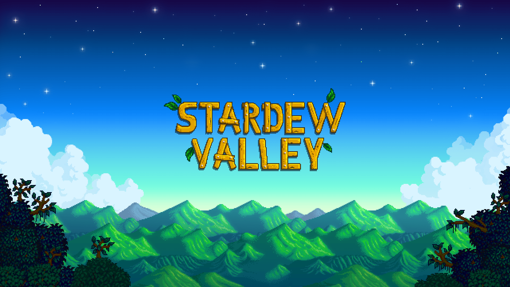

Lab 11: Advanced Block-Level Styling
The purpose of this lab was to experiment with block level styling.
Challenges
The only challenge I had was understanding what to do with the 'nav id=links' stuff, but hopefully I did figure it out and as you go through my webpage you are able to see that I did it properly and very well.
Results
As you can see, my block-level styling is extremely advanced, and it all looks fantastic. Hopefully under this there is enough content to make it scroll downwards, and so it'll show off my coding skills.
Jeremy's Favorite Games
Hey there, folks. In order to pad out this webpage, I will be showing you photos of some of my favorite games, and I will be telling you exactly why they're my favorite games, and what makes them so good. Throughout this list, you might find that there are a lot of games that require a character, usually with long hair, and/or a beard, to ride on a horse, in an open world. This is largely due to the fact that I grew up on a ranch, maybe, and I've always wanted to be a cowboy. Enjoy.

The Legend of Zelda Breath of the Wild is one of my favorite games, of all time. I was immediately immersed into this new world, and I couldn't stop playing it for days. Even now, years after the game's release, I still boot it up to walk around and to explore. I look forward to the sequel.

The Witcher 3 Wild Hunt is an extremely fun game that delves into different mythologies and legends about different monsters. But it also shows that perhaps sometimes, WE are the real monsters. Anyways, I look forward to the Cyberpunk 2077, the next game to come from the makers of this game.
Red Dead Redemption 2 is the perfect cowboy simulator. Never have I ever felt more like an outlaw. on the run from the authority. It's a very fun, rootin' tootin' shootin' time.
Animal Crossing New Horizons is definitely game of the year of 2020, for me. This game had me up, pulling all nighters, and for what? So that I could open up my museum? So I could pay off my house debts? Yes. And I would gladly do it all over again.

Super Smash Brothers Ultimate is a fantastic fighting game. It's one that I have a good relationship with, as I am good enough to beat my friends, but not good enough to be professional. I like learning more and more about the different characters in the game, and the different mechanics. It sure does help, fill my big fat brain up with knowledge.
Stardew Valley makes a lot of sense being one of my favorite games due to the fact that I absolutely love farming in games. I'm not so sure as to why, perhaps it goes back to me having been raised on a ranch, and always liking nature. Whatever the reason, I always like tending to my crops in Stardew Valley, and taking care of my livestock, who I name after my friends.